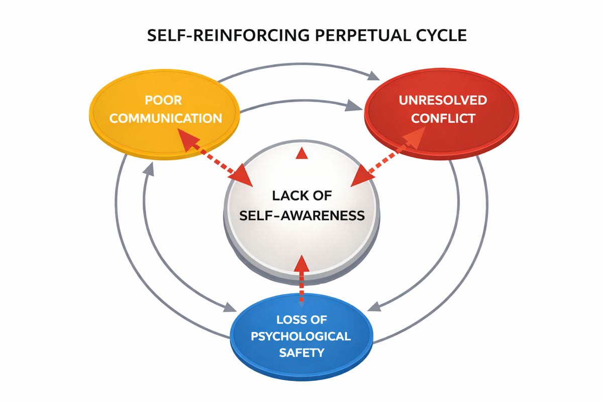
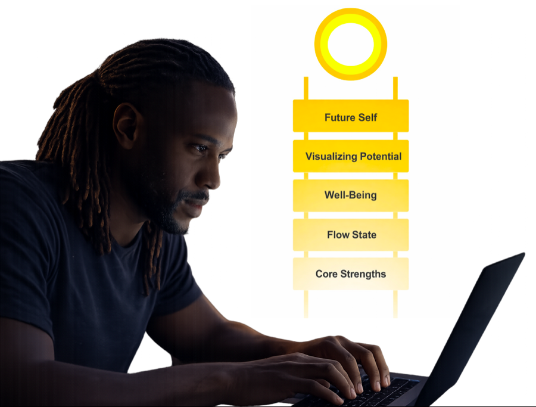
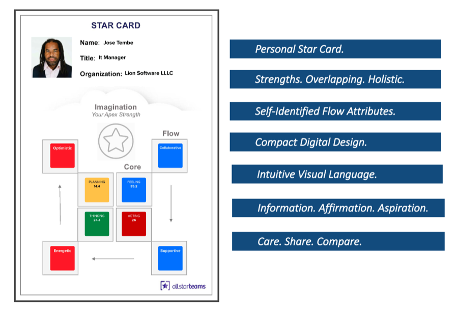
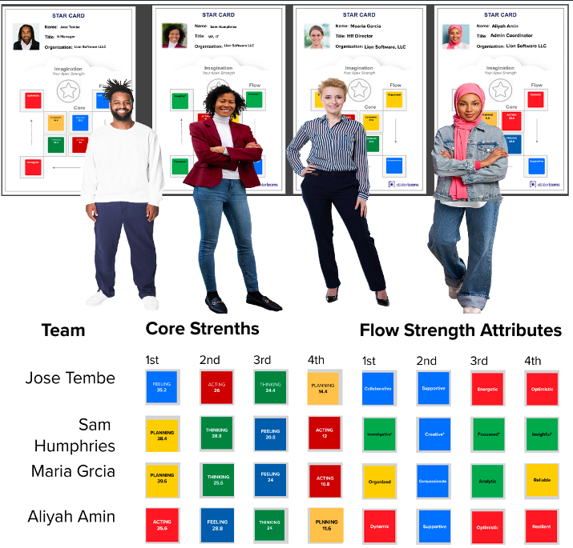
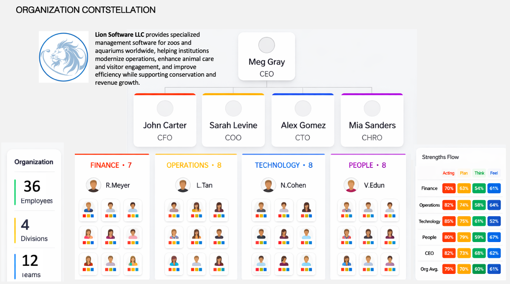
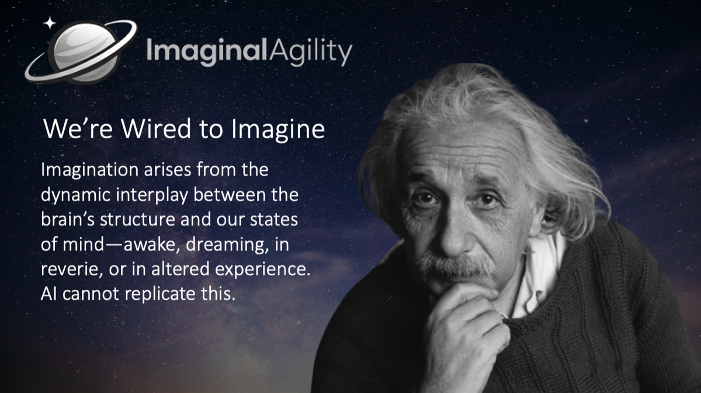
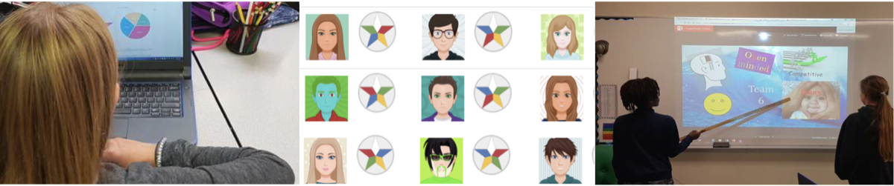
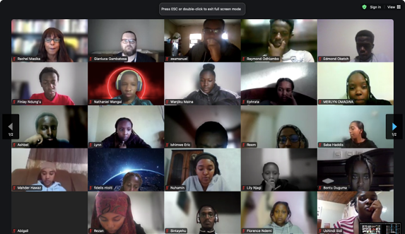

AllStarTeams enhances individual self-awareness in order to better appreciate one's core strengths, optimal flow state, quality of wellbeing, and future self-continuity pathways.
Self-awareness is foundational to effective teamwork and organizational performance.
Despite massive investments in technology and training, the fundamental human capabilities that drive collaboration, performance, and innovation continue to decline. The culprit isn't skill. It's self-knowledge.
Only 12% actually are, according to researcher Tasha Eurich
Costing $8.8 trillion in lost productivity globally
Lack confidence in leadership's ability to succeed in 2 years (Gartner, 2025)
The vast majority are not performing at their potential
When individuals lack self-awareness, they project onto others, misread signals, and manage from deficits. The negative mind — wired for threat — amplifies this at every level: individual, relational, and organizational. A self-reinforcing cycle emerges that no technology can fix.

Poor communication breeds unresolved conflict. Conflict erodes psychological safety. And the loss of safety deepens the blindspots that started the cycle. No tool, training, or technology can interrupt this loop without first addressing self-awareness at its root.
Our brains encode threats more strongly than strengths — a million years of survival conditioning. AllStarTeams deliberately redirects this bias toward potential.
What we believe about ourselves is often colored by fear and false certainty. The structured AST assessment cuts through the noise with evidence-based precision.
True self-awareness — as defined by the research — means understanding both who you are internally and how others perceive you, then using that balanced insight to take positive, actionable steps forward. Most approaches address one side. AllStarTeams uniquely integrates both.
The AllStarTeams Microcourse is a complete, self-contained experience. Available to any professional, anywhere — independently or through an organization. It integrates Five Dimensions of Self-Awareness rarely combined in a single self-review process.

Any professional can access the microcourse independently — funded by their employer, professional association, or themselves. The value is entirely theirs.
The Star Card is a compact visual profile that captures a person's core strengths, flow attributes, and aspirations in one integrated view. It provides a simple, shareable language for understanding how individuals think, feel, plan, and act. Imagination is recognized as the apex strength, symbolized by the star at the center of the framework.

Design Origins
Rooted in the work of Seligman (Positive Psychology), Csikszentmihalyi (Flow Theory), and Jung (Imaginal Psychology) — grounded in the ancient concept of eudaimonia — the Star Card bridges philosophy and practice.
An AI-synthesized narrative connecting all five dimensions into a coherent, personalized forward looking, positive report.
The journey doesn't end. Return quarterly to one's growth plan, track progress, and continue to enhance self-understanding over time.
When team members share their Star Cards in a facilitated whiteboard session, the real power emerges. The Strengths-Flow Fusion Matrix reveals synergies, gaps, and leadership capacity — in hours, not months.

"By understanding and leveraging one's strengths, a flow state can be achieved leading to optimal performance for individuals, teams, and organizations." — Dr. Mihaly Csikszentmihalyi
The individual microcourse is complete on its own. When multiple team members have gone through it, something remarkable becomes possible: a living talent map that surfaces synergies no other tool can reveal.

Across every major profession — project management, HR, engineering, finance, law, coaching — members must demonstrate "Soft Skills" competence and earn recertification credits every 3 years on average. AllStarTeams addresses these core competencies practically all associations require: Self-Management, Communication, Collaboration, Adaptive Thinking, and Resilience.
PDU Eligible — Verified. Earns units across the PMI Talent Triangle: Leadership, Strategic & Business Management, and Technical Project Management.
Addresses core HR competencies including self-awareness, psychological safety, collaborative leadership, and organizational effectiveness.
ASME · CPA · ACCA · IMA · ABA · CIPD · IPMA · ATD · ICF · IEEE · ASCE — whether or not your employer invests, your association pathway is open.
Across PMI, SHRM, ATD, ICF, IEEE, ASCE, CPA, ABA and more — the individual professional development market is enormous and underserved.
Every major profession requires demonstrated soft skills competence on a recurring basis — a need AllStarTeams is purpose-built to address.
"AllStarTeams is an outstanding resource for team development and individual growth. The structured exercises enhance self-awareness, strategic thinking, and empathy — empowering individuals to reach their full potential. Its emphasis on both individual and team dynamics, including AI-curated profiles, makes it invaluable for creating cohesive, innovative, and resilient teams." — Cassio Reis, PMP — Director of Governance, PMI Manitoba
These paired icons represent the spirit of AllStarTeams: the individual and their connection to the team. Inspired by the now-iconic AI sparkle, the symbol has been reimagined as a five-point form that reflects the individual and the five human strengths that link each person to their teammates. Together, the mark expresses a human-centered approach to teamwork — one that strengthens people while engaging AI thoughtfully and intentionally.
AllStarTeams stands completely on its own — an immediate, actionable self-awareness practice for any individual or team. For those ready to go further, it connects naturally to Imaginal Agility: a Neuroscience-based Microcourse empowering people's agency and metacognition to collaborate more effectively with AI.


Over two decades, AllStarTeams and its predecessor Prelude Suite have benefitted more than 25,000 students worldwide — across diverse cultures, institutions, and age groups — from mainstream youth to at-risk populations. Self-awareness is the foundation of every learning journey.
AllStarTeams scales across the full educational continuum — from early adolescence through advanced professional education. Value increases proportionally moving from mainstream to disadvantaged and at-risk youth.
Ages 11–14. Building foundational self-awareness, emotional vocabulary, self-esteem, and identity before habits solidify.
Ages 14–18. Strengthening confidence, resilience, team dynamics, and emerging leadership during formative years.
Developing life-work skills, career readiness, and practical teamwork for real-world transitions.
Preparing graduates for workplace realities: orientation, cohort bonding, communication, and leadership.
Deepening strategic self-knowledge for project teams, research collaboration, and emerging leaders.
The value of AllStarTeams increases proportionally across the learner spectrum — from mainstream classrooms to the most challenging at-risk environments.
Builds self-awareness, collaboration, and a can-do attitude in everyday classroom settings.
Develops empathy, life skills, and positive identity for students facing social or economic challenges.
Proven effective in gang rehabilitation, aggression replacement training, and residential treatment programs.
AllStarTeams (AST) was employed effectively across the curriculum and in extra-curricular programs — integrating into existing educational frameworks without displacing them. It adapts to the institution's needs while earning students recognized credentials.
A complete 90-minute module offered as an independent course or workshop.
Integrated into existing courses: leadership, business, psychology, counseling, career development.
Adopted across a full program or faculty for cohort-level self-awareness development.
Delivered through student services, career centers, or orientation programs.
Adapts to any school schedule and classroom format.
Blends in-person and remote participation seamlessly.
Fully online delivery with no loss of engagement or impact.
Works with most collaboration & communication platforms, online interactive whiteboards, and learning management systems.
AllStarTeams is grounded in proven educational frameworks — supporting formative assessment, positive youth development, and project-based learning.
AllStarTeams scaffolded exercises enhance and widen students' self-awareness and appreciation of peers' commonalities and differences — building the metacognitive habits that support continuous learning.
Aligned with PYD principles, enabling students to practice and embody them experientially: use experiential learning, develop assets, foster belonging, and build competence.
The AllStarTeams experience is structured like a project, calling for students to work effectively as teams by playing to individual strengths and flow states.
DirectEd Mission: Preparing African Youth for the Future of Work
World-class training and remote paid internships with US and European companies. Web development, UIX and Artificial Intelligence.
AllStarTeams Program
40+ Students (Ages 17–22) Across Kenya and Ethiopia
Completed the full AllStarTeams Micro Course and Team Whiteboard experience. Strengthened confidence, self-awareness, and cross-cultural collaboration skills.

"The AllStarTeams proved transformative for our students. As a tech educator, we've found this is an extremely important tool in our toolkit." — Simon Sällström, CEO, DirectEd Development
AllStarTeams has formed a strategic partnership with the International Center for Innovation in Education (ICIE) — a global organization dedicated to advancing gifted, creative, and exceptional education worldwide.
ICIE connects AllStarTeams to a global community of educators committed to developing the whole learner — not just academic outcomes.
"AllStarTeams changed my classroom and my practice. It helps students develop self-esteem, a can-do attitude, and real working-world skills." — Gail Klinck, Middle School Teacher, Massey Vanier High School, Quebec
"AllStarTeams was beneficial and very worthwhile. It enables students and teachers to discover their special attributes." — Adriano Magnifico, Program Head, Louis Riel School District, Manitoba
"AllStarTeams falls in line with our Medicine Wheel for the Woodland Cree People. It really was effective in pulling our group together." — Nora Yellowknee, Curriculum Supervisor, Bigstone First Nation, Alberta
"Not enough can be said about AllStarTeams usefulness in helping antisocial youth develop crucial life skills like empathy, cooperation, and self-regulation." — Robert Calame, A.R.T. Counsellor, Place Cartier Adult Education Centre
"In all my years facilitating workshops of one month, one week, and even one day, I've never seen students learn about themselves and each other so quickly and deeply." — J.D. Szezepaniak, Life Skills Coach, Northern Lakes College
"This is an excellent way for new project teams to build trust, align on expectations, and facilitate collaboration. We used it on 12 enterprise architecture projects." — Dr. Alexander Zak, UC San Diego, Jacobs School of Engineering & Rady School of Management
Whether you're a school counselor, faculty member, program director, or institutional leader — AllStarTeams Education is ready to partner with you. Start with a pilot. Scale at your pace. Transform how your learners understand themselves and each other.
Every student who completes the AllStarTeams microcourse leaves with something no grade can give them: a clear, evidence-based understanding of who they are and what they're capable of.